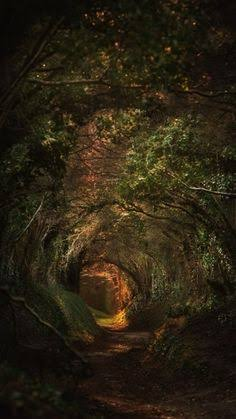
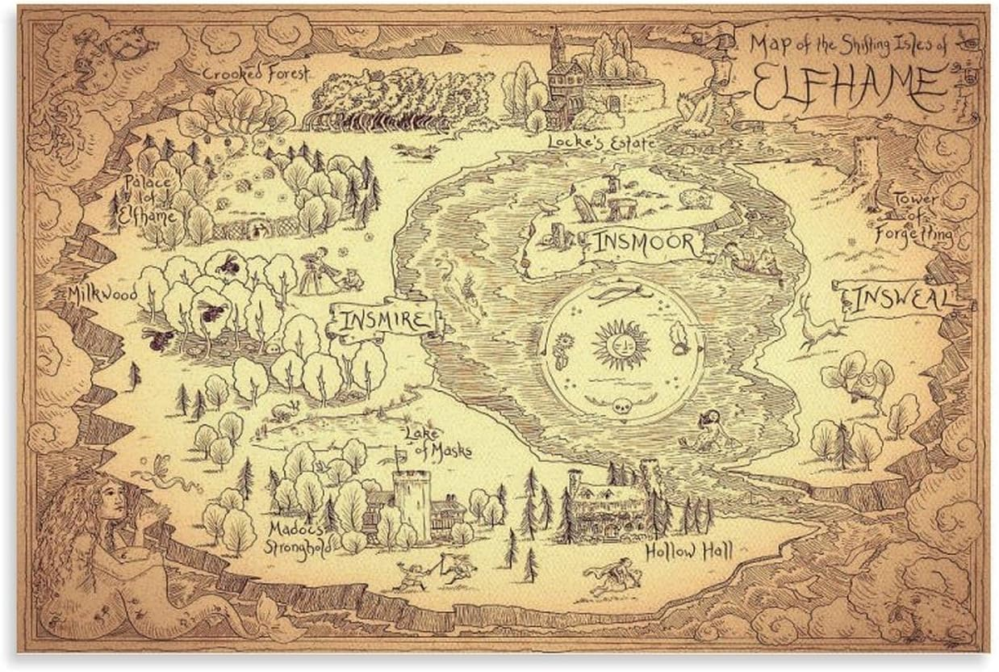
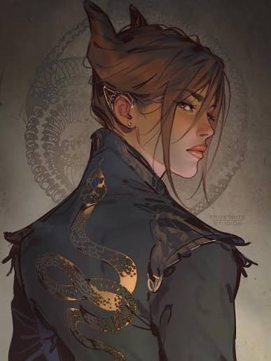
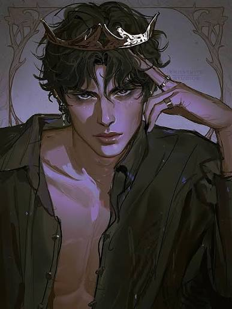

Cardan's bullying makes Jude's place in Elfhame harder to bear. Jude, however, refuses to make herself small for his comfort. Their conflict is tangled in status: he is a prince of the Folk; she is a mortal determined not to be dismissed.

THE FOLK OF THE AIR · BOOK I
THE CRUEL
PRINCE
Welcome to Elfhame. Keep your wits about you.
FOLLOW THE PATH ↓I · BEYOND THE MORTAL WORLD
Elfhame is not
a fairy tale.
The Faerie realm is lush, ancient, and perilous. Its beauty can feel unreal: old woods, strange paths, and a court where splendour sits beside cruelty. But mortals enter this world at a disadvantage.
The Folk are powerful, proud, and bound by customs that a human may not fully understand. Glamour and enchantment can mislead the senses, while a careless promise or an insult at court can carry real weight. Here, charm is not the same as kindness—and beauty is no promise of safety.
Look closely. Listen carefully. Never mistake courtesy for trust.

II · POWER AND ETIQUETTE
At court, every
smile has a price.
Elfhame's royal court runs on rank, rivalry, favours, and carefully chosen words. The High King holds the throne, but the royal family and courtiers are surrounded by shifting ambitions. To be noticed can be dangerous; to be underestimated can be useful.
Jude wants more than to watch from the edges. She wants a place in a world that reminds her she is mortal—and she learns that influence is rarely handed over freely.
03 · THE MORTAL

JUDE DUARTE
Mortal.
Not powerless.
Jude was brought to Elfhame as a child after the murder of her parents. Raised there alongside her twin sister Taryn and her older sister Vivienne, she grows up surrounded by the Folk while never being one of them herself.
She is ambitious, stubborn, observant, and willing to take risks. Though the cruelty directed at her cuts deep, Jude refuses to accept a life of helplessness. She wants the ability to protect herself and to shape her own future—even when the path to power demands difficult choices.
Her greatest advantage is not magic. It is that she keeps learning.
04 · THE PRINCE
CARDAN GREENBRIAR
Beautiful manners.
Beautifully cruel.
Cardan is the youngest son of High King Eldred. He is known for his sharp tongue, his disdainful wit, and the cruelty he and his circle direct at Jude. He can be theatrical and cutting, making humiliation feel like a performance staged for an audience.
But Cardan is not simply a charming prince in a storybook. His place in the royal family is complicated, and the court around him is full of pressure, privilege, and danger. What he shows the world is not the whole of what shapes him.
In Elfhame, a prince's words can wound as surely as a blade.

V · A DANGEROUS GAME
Jude × Cardan
Contempt, ambition, and a court where neither can afford to misread the other.
Both are clever, proud, and shaped by the court's rules, though they move through those rules from very different positions. Their dynamic develops through power plays, reversals, and choices that complicate any easy reading of either one.
This page avoids major plot spoilers.
A FINAL WARNING
The path back to the mortal world
may not be the path you remember.